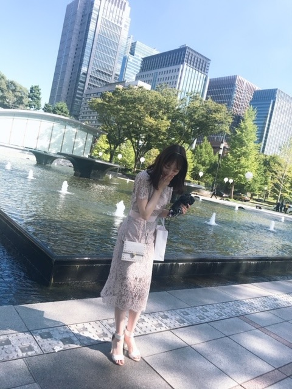
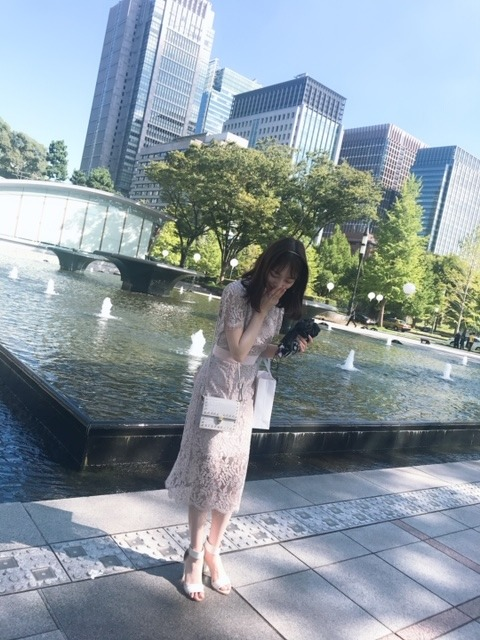

2020/0426Sunplaylist
昨日は寝る前に
ハッピーデスデイ2Uを観て
今日はプリティプリンセスを
今日はプリティプリンセスを
久しぶりに観ました❁
アンハサウェイさん初主演の作品で
普通に暮らしていた女の子が実は
プリンセスだったというお話です
特にすきなシーンは
すっぴんボサボサヘアから
すっぴんボサボサヘアから
美少女に大変身して鏡を見るシーン
好きすぎて尊すぎて
鳥肌がたって泣けてきます...
意識やメイクで女の子はうんと可愛くなれる
そんな魔法みたいなシーン
*☽:ﾟ･⋆｡✰
プリティプリンセスの世界観を
写真で表すとしたら

素朴な女の子

が、

キラキラプリンセスになる
っていうかんじです
最後のお庭のシーンも素敵なの...
ロマンチック...
大好きな作品の1つです
大好きな作品の1つです
是非みてみてください☺︎

さて、
今日は私の
[ 最近よく聴くプレイリスト ]

さて、
今日は私の
[ 最近よく聴くプレイリスト ]
#未央奈のplaylist
を公開したいと思います☺︎
普段、曲を聴くときは
歌詞を見ながら聴くことが多いのですが
歌詞の意味を考えたり作詞した人の気持ちに
なってみたり歌詞の世界観に浸ってみたり...
音楽1つで 気分があがったり
悲しい気持ちが軽くなったり
私の何気ない日常には
音楽は、必要不可欠です
みなさんはどんな曲を聴きますか？
" 洋楽 "
I AM / Hilary Duffさん
if you come back / Blueさん
Love is easy / McFlyさん
All About you / Mc Flyさん
Permission / New Hope Clubさん
Medicine / New Hope Clubさん
Let Me Down Slow / New Hope Clubさん
Love story / Taylor Swiftさん
You Belong With Me / Taylor Swiftさん
I Love Loving You / The Vampsさん
Just my type / The Vampsさん
Another World / The Vampsさん
Personal / The Vampsさん
One thing / One Directionさん
イギリスのバンドが昔から
姉の影響で好きですね☺︎
MVもいい感じのゆるさがオシャレです
" 邦楽 "
永遠はきらい / 上白石萌音さん
リフレクション / 伊藤恵里さん
Flavor Of Life / 宇多田ヒカルさん
漂白 / あいみょんさん
テレパしい / あいみょんさん
ら、のはなし / あいみょんさん
好きって言ってよ / あいみょんさん
正夢 / スピッツさん
メッセージ / チャットモンチーさん
バスロマンス / チャットモンチーさん
染まるよ /チャットモンチーさん
消えない星 / チャットモンチーさん
例えば、 / チャットモンチーさん
4秒 / aikoさん
サイダー / aikoさん
星のない世界 / aikoさん
カタオモイ / Aimerさん
花束 / back numberさん
SISTER / back numberさん
光の街 / back numberさん
僕の名前を / back numberさん
泡と羊 / back numberさん
世田谷ラブストーリー / back numberさん
頬を濡らす雨のように / backnumberさん
one room / back numberさん
リッツパーティー / back numberさん
だいじなこと / back numberさん
march / back numberさん
シーグラス(カバー) / back numberさん
花の名 / BUMP OF CHICKENさん
そっけない / RADWIMPSさん
祝祭 / RADWIMPSさん
グランドエスケープ / RADWIMPSさん
夢灯籠 / RADWIMPSさん
スパークル / RADWIMPSさん
なんでもないや / RADWIMPSさん
One / RIP SLYMEさん
黄昏サラウンド / RIP SLYMEさん
Tales / RIP SLYMEさん
パール / THE YELLOW MONKEYさん
この恋のかけら / THE YELLOW MONKEYさん
美影意志 / UVERworldさん
浮世CROSSING / UVERworldさん
Driving today / YUIさん
No way / YUIさん
I will love you / YUIさん
It's all right / YUIさん
Simply white / YUIさん
LIFE / YUIさん
Understand / YUIさん
ビスケット / YUKIさん
エスケープ / 手嶋葵さん
朝ごはんの歌 / 手嶋葵さん
是非、歌詞を見ながら
聞いていただきたい曲ばかり!
" KPOP "
Bad boy / Red Velvetさん
Peek-A-Boo / Red Velvetさん
SAPPY / Red Velvetさん
Psycho / Red Velvetさん
Umpah Umpah / Red Velvetさん
DUN DUN / EVERGLOWさん
NO LIE / EVERGLOWさん
Twenty-three / IUさん
BBIBBI / IUさん
Blueming / IUさん
Hey.Bae.Like it. / IZ*ONEさん
Up / IZ*ONEさん
Airplane / IZ*ONEさん
SPACESHIP / IZ*ONEさん
LIAR LIAR / OH MY GIRLさん
TURTLE / TWICEさん
Wishing / TWICEさん
Feel Special / TWICEさん
breakthrough / TWICEさん
Beautiful / Wanna Oneさん
Say yes / LOCO.punchさん
All With You / テヨンさん
麗 を見終わって、今は
恋するジェネレーション
を観ています
泣けるしキュンキュンするし良きです☺︎

またいい歌があったらご紹介します!
普段、曲を聴くときは
歌詞を見ながら聴くことが多いのですが
歌詞の意味を考えたり作詞した人の気持ちに
なってみたり歌詞の世界観に浸ってみたり...
音楽1つで 気分があがったり
悲しい気持ちが軽くなったり
私の何気ない日常には
音楽は、必要不可欠です
みなさんはどんな曲を聴きますか？
" 洋楽 "
I AM / Hilary Duffさん
if you come back / Blueさん
Love is easy / McFlyさん
All About you / Mc Flyさん
Permission / New Hope Clubさん
Medicine / New Hope Clubさん
Let Me Down Slow / New Hope Clubさん
Love story / Taylor Swiftさん
You Belong With Me / Taylor Swiftさん
I Love Loving You / The Vampsさん
Just my type / The Vampsさん
Another World / The Vampsさん
Personal / The Vampsさん
One thing / One Directionさん
イギリスのバンドが昔から
姉の影響で好きですね☺︎
MVもいい感じのゆるさがオシャレです
" 邦楽 "
永遠はきらい / 上白石萌音さん
リフレクション / 伊藤恵里さん
Flavor Of Life / 宇多田ヒカルさん
漂白 / あいみょんさん
テレパしい / あいみょんさん
ら、のはなし / あいみょんさん
好きって言ってよ / あいみょんさん
正夢 / スピッツさん
メッセージ / チャットモンチーさん
バスロマンス / チャットモンチーさん
染まるよ /チャットモンチーさん
消えない星 / チャットモンチーさん
例えば、 / チャットモンチーさん
4秒 / aikoさん
サイダー / aikoさん
星のない世界 / aikoさん
カタオモイ / Aimerさん
花束 / back numberさん
SISTER / back numberさん
光の街 / back numberさん
僕の名前を / back numberさん
泡と羊 / back numberさん
世田谷ラブストーリー / back numberさん
頬を濡らす雨のように / backnumberさん
one room / back numberさん
リッツパーティー / back numberさん
だいじなこと / back numberさん
march / back numberさん
シーグラス(カバー) / back numberさん
花の名 / BUMP OF CHICKENさん
そっけない / RADWIMPSさん
祝祭 / RADWIMPSさん
グランドエスケープ / RADWIMPSさん
夢灯籠 / RADWIMPSさん
スパークル / RADWIMPSさん
なんでもないや / RADWIMPSさん
One / RIP SLYMEさん
黄昏サラウンド / RIP SLYMEさん
Tales / RIP SLYMEさん
パール / THE YELLOW MONKEYさん
この恋のかけら / THE YELLOW MONKEYさん
美影意志 / UVERworldさん
浮世CROSSING / UVERworldさん
Driving today / YUIさん
No way / YUIさん
I will love you / YUIさん
It's all right / YUIさん
Simply white / YUIさん
LIFE / YUIさん
Understand / YUIさん
ビスケット / YUKIさん
エスケープ / 手嶋葵さん
朝ごはんの歌 / 手嶋葵さん
是非、歌詞を見ながら
聞いていただきたい曲ばかり!
" KPOP "
Bad boy / Red Velvetさん
Peek-A-Boo / Red Velvetさん
SAPPY / Red Velvetさん
Psycho / Red Velvetさん
Umpah Umpah / Red Velvetさん
DUN DUN / EVERGLOWさん
NO LIE / EVERGLOWさん
Twenty-three / IUさん
BBIBBI / IUさん
Blueming / IUさん
Hey.Bae.Like it. / IZ*ONEさん
Up / IZ*ONEさん
Airplane / IZ*ONEさん
SPACESHIP / IZ*ONEさん
LIAR LIAR / OH MY GIRLさん
TURTLE / TWICEさん
Wishing / TWICEさん
Feel Special / TWICEさん
breakthrough / TWICEさん
Beautiful / Wanna Oneさん
Say yes / LOCO.punchさん
All With You / テヨンさん
麗 を見終わって、今は
恋するジェネレーション
を観ています
泣けるしキュンキュンするし良きです☺︎
またいい歌があったらご紹介します!
ちなみに乃木坂46の中で
(もちろん全部ですが)
特に、すきな歌プレイリストは
別れ際、もっと好きになる
君に贈る花がない
三角の空き地
ゴルゴンゾーラ
当たり障りのない話
春のメロディー
他の星から
アナスターシャ
シークレットグラフィティー
空気感
やさしさとは
失いたくないから
ちなみにすきなMVプレイリストは
立ち直り中
スカウトマン
大人への近道
ハルジオンが咲く頃
新しい世界
キャラバンは眠らない
アナスターシャ
今、話したい誰かがいる
ガールズルール
滑走路
女は一人じゃ眠れない
サヨナラの意味
かなぁ
みなさんの好きな
乃木坂の歌、乃木坂以外の歌もお聞かせください!
2020/04/26 20:12


コメント(865)
未央奈のプレイリスト聞いてみるね！！
未央奈の肌の白さにする方法教えてください！！
男性なんですけど気になります！！
早朝にコメントしちゃって
ごめんね((現在04:20
#未央奈のPlaylist
是非聴いてみたいと思います( ¨̮ )
最近、お姉ちゃんが教えてくれた
洋楽って言うのかな??
ちょっと詳しいことは分からないけど
「one call Away」が歌詞も素敵だし
ゆったりめのテンポとか
私の好きな感じですごく好きになった!!
次の更新も待ってます( ˙꒳˙ )
aikoだったら【シアワセ】かな！
Taylor だったら【our song】！
「だんだん心惹かれてく」が好き！！
あとはベリーグッドマンさんの歌とかかな
いつの間にか更新されてましたネ。
乃木坂のMVで大好きな曲は
気づいたら片思い 冒頭、堀ちゃんのシーンから始まり皆さんがまだ初々しい(//∇//)
バレッタ 何回も繰返し見てもカッコ良い❗ドラマ仕立てです(°▽°)堀ちゃんの不思議な大物感にビックリしましたヾ(@゜▽゜@)ノ
命は美しい 乃木坂で一番好きな曲です。ダンスも大好きで堀ちゃんを探し見つけた時は嬉しかった思い出があります。（~▽~＠）♪♪♪
ブランコ 映像の世界観がすごく好きですp(^-^)q
アナスターシャ 二期生の代表作です(≧∇≦)完璧ですＯ(≧∇≦)Ｏ サヨナラの意味と同じ位泣けるMVです(T.T)
まだまだ見れていないのがありますので、休み期間に見て楽しみたいです。
今日はさゆにゃんの卒業だから、乃木坂一色の日となるでしょう❗(^人^)
こまめにブログ更新してくれてありがとうございます☺️
未央奈ちゃんのブログに初めてコメントさせて頂きました。
インスタグラムやブログ・755のようなSNSを、現状に奢らず、こまめに素直に発信して頂いて、乃木坂ファンの一人として感謝しています。みおなメイクやみおなファッションも、楽しく拝見させて頂いていますよ☺️
さて、僕がおすすめするアーティストさんは、浜崎あゆみさんです。乃木坂メンバーには、あまり馴染みがないかもしれませんね。４０歳手前の僕にとってはツボなので。
おすすめ曲は、「SAKURA」です。どちらかと言えば最近の方に発売されたアルバムの中にある一曲で、涙腺直撃のバラードです。
おすすめのMVは、「Voyage」です。これもストーリーが良くて、泣ける一曲です。
乃木坂絡みでの曲リストは、
アナスターシャ
別れ際、もっと好きになる
自由の彼方
やさしさとは
キャラバンは眠らない
不等号
命は美しい
逃げ水
サヨナラの意味
路面電車の街
の１０曲でしょうか。
これ、本当に未央奈ちゃんに合わせたわけでもないですよ(笑)。どちらかと言えば、涙を誘う曲が多いですね。
乃木坂のMVは
気づいたら片想い
アナスターシャ
キャラバンは眠らない
今話したい誰かがいる
サヨナラの意味
じゃあね
ハルジオンが咲く頃
大人への近道
路面電車の街
Sing Out!
の１０曲です。
好きな曲は、好きなMVになる傾向が、やっぱりありますね。
片想いは、七瀬ちゃんの魅力が爆発していて、掛け値なしに泣けます。
アナスターシャは神曲でもありますが、神MVですよね。3:28なんて、多分もう生涯忘れない数字になってます。３人とボーダー組が再会する瞬間は、もはや通勤電車の中では見ることができません。
大人への近道は、サンクエトワールの曲ですが、特に蘭世ちゃんの可愛さが凄まじい…☺️逃げるとこで椅子につまずいたり、みんなとはぐれて泣きそうになっていたり。
こうして見ると、僕のおすすめは、何かと涙を誘う曲が多いんですよね。
でも、浜崎あゆみさんの曲には、背中を押してもらえる曲とか、友情を歌った曲等の、アップテンポもたくさんありますよ。是非に聴いてみて下さい。
夜中に長文失礼致しました。
こんな時だからこそ、乃木坂メンバーの明るいSNSに元気をもらえて、本当に感謝です。これからも楽しみにしていますね。
もちろん、乃木坂のハイな曲も大好きです！！
乃木坂で好きな歌は夜明けまで強がらなくていいや
じゃあね、ゆっくりと咲く花です。
欅坂のサイレントマジョリティやガラスを割れ、黒い羊、日向坂のこんなに好きになっちゃていいのやソンナコトナイヨ、青春の馬も好きです。
おはよう。乃木坂で好きな曲、「さよならの意味」私もとても、好きっす。車でよく聞いてます。では、
又、更新おなしゃーす。
幼少の頃、なんか「ロイヤル」って言葉に反応することがあって、ロイヤルミルクティーとかロイヤルブレットとか手に取っている内に自分はきっと何処かの王家の血筋で、いつかお迎えが来る！と思い込んでましたが、待てど、暮らせど、お迎えが来ず、もう王子と呼ばれる歳ではなくなってしまいました、、、、
あっ、申し遅れました、ぼーです。
未央奈さんがこの様なお話がでるなんて奇遇ですね！きっとこれは運命的なご縁があるのではないでしょうか？きっとそうですよ！(ジャイアン並の強引さ)
まめに更新してくれて嬉しいです。凄くたくさんの音楽を知っていらして、音楽好きなんだなぁと思いました。
それじゃ
乃木坂46で好きな曲 シンクロニシティ 孤独なlover きっかけ ジコチューでいこう かなぁ
乃木坂46以外で好きな曲 スピッツさんのチェリー GET WILDです。
質問です！！
今高1なんですけどファンになってもいいですか？
まだまだ乃木坂の曲全部を知っている上級者ではないので、少しずつ聴いていこうと思います！
あとはSEKAI NO OWARIさんのマジック、Official髭男dismさんのパラボラです
最近は寒暖差が激しいね
体調にはくれぐれも気をつけてね
前髪が伸びてるね
鬼太郎みたいになってるよ
おいそれと美容院に行くわけには
いかないし仕方ないね
今日は乃木坂のライブ映像を
じっくり観ようと思います
あんなことがあったな、
こんなこともあったな
と昔を振り返る時間も大切ですね
今日はさゆの卒業の日ですね
さゆとの思い出はありますか？
何もしてあげられないのが
もどかしいですが
これからのさゆの活躍を祈ってます
それでは
良い日になりますように
いつもの時間に起きましたが
僕のお姫様は今もぐっすりおやすみ
なんでしょうね。
うらめしや、うらめしや。
au pay マーケットのお話しましょう。
干し柿を選んでたね。あの中で選ぶなら
僕もです。ただ理由があります。
僕はシーズンになると美味しいと
言われる産地まで車を走らせて
買いに行くほど果物が好きです。
桃、ぶどう、梨、柿、みかん…
もちろん自分では食べきれないので
欲しい分だけ抜いて残りを家族に
あげるパターンです。
柿も買いに行く訳なんですが
その場所というのが岐阜県本巢市の
富有柿。さすがに聞き覚えあるよね。
柿の中ではあそこのやつが1番。
愛知県にも産地はあるんだけど
わざわざ車を走らせて岐阜まで
行きます。すごいでしょ？
僕はあそこのやつが好きなんです。
解禁日になるとじじ様、ババ様に
紛れて朝から並び、箱の取り合い
ですよ。すごい光景になります。
というプチ自慢話をしたかった。
やっぱり長くなったね。
ギリギリau pay マーケットの話に
絡んでるよね？
今日もおすすめの映画を観るつもり
ですが一旦落ち着く為に"君の名は"
を観てからにします。
ハッピーなやつはハードル高いんだよ。
では。
その映画今週観てみようかな。
観るものがなくなってきたので助かる！
そして、未央奈ちゃん選曲！
これも聴いてみる！
洋楽とか普段あまり聴かないから楽しみ。
今週は未央奈ちゃん祭になりそう！笑
これで今週も乗りきれそうです！
ありがとね！！
ではでは～
他にも「Ｋ」と「Ever lasting lie」聴いてみてください。
歌詞が物語になってます。
未央奈可愛い〜♡♡♡
乃木坂46の曲は全部好き〜
これからも体調に気をつけて頑張ってね!!!
大好き♡
SingOut!
アナスターシャ
Isee…は特に!!
Official髭男dismさん「ILOVE」「Pretender」
backnumberさん「オールドファッション」「HAPPY BIRTHDAY」
Aimarさん「STAND─ARRON」
kingGnuさん「どろん」
人気な曲で、知ってるかもしれないけど好きなんだ〜!
乃木坂46MV行くね!（ごめん多すぎる（笑））
空扉 アナスターシャ シンクロニシティ 平行線 日常 スカウトマン
きっかけ 君に贈る花がない そんなバカな… 世界で一番孤独なLOVER
人はなぜ走るのかです!!!長すぎでごめん!
未央奈に聞いてほしい歌でした!!
ありがとう
僕のおすすめの曲も紹介したいと思います。
Only Human/Kさん
思い出せなくなるその日まで/back numberさん
ささえる人の歌/back numberさん
足音/Mr.Childrenさん
終わりなき旅/Mr.Childrenさん
LAST DANCE/BIGBANGさん
よかったら聴いてみてください。
どうか健康に気をつけて元気でお過ごし下さい！
未央奈さんもですが他のメンバーや周りのスタッフも気をつけるよう言っておいてください。
私は過去の乃木中、乃木どこだけであと1年は自粛生活できます。
なので仕事も無理せず命第一でいてください
素朴なモノトーンの堀ちゃん、マジ可愛い❗
あんなにボサボサヘアなのにズルいぞ
美人さんはやっぱ何しても美人さんだなぁ…
俺、乃木坂の曲で「バレッタ」が一番好き
つけっぱなしのTVのCMから流れていて、凄く好きな音調で耳に残って普段、全く音楽に興味が無かったのに生まれて初めてスマホに落としました
それからはもう乃木坂にどっぷりハマってしまってどうにも抜け出せません
車とバイク以外に夢中になってしまうとは……
最近は「ステイホーム」という事もあり、毎日毎日、乃木坂ちゃんに癒されてます
感謝感謝です。堀ちゃんも体には十分気をつけて毎日を過ごしてね
またねっ！←でんちゃんの真似(笑)
ブログ更新ありがとうー！
僕が最近聴いてる曲は嵐さんのTurning upとBelieve、未央奈と同じくbacknumberさんの花束、乃木坂の曲は夜明けとSing outとインフルエンサーかなー。最近YouTuberの曲でSTスタジオさんの「煌めけ、夢！」や「ずっとCrew」はホントに心強いと言うか夢をに向かって自分を押してくれるようなそういう曲になってます！
未央奈のメイクとかほんとすごい、
尊敬してます！
僕は乃木坂の曲
シンクロニシティ
帰り道は遠回りしたくなる
行くあてのない僕たち
threefold choiceとか特に好きです！！
いつもブログ更新とかありがとうございます！楽しみに待ってますね！
自分の写真で作品を再現するとはさすがみおちゃん！
でも髪ボサボサ状態でもこの子ちゃんとしたら絶対可愛くなるって分かるよ 笑
プリンセス写真はホントにプリンセス！
ティアラが絶対似合う！
音楽は乃木以外だと
ジャニーズが多いかな
あとあいみょんもよく聴きます
最近はMVとかライブ映像ずっと観てます
早く元の生活に戻りたいね
では、今日も1日楽しんで生きましょうd(@^∇ﾟ)/ﾌｧｲﾄｯ♪
o(ﾟ▽＾)ﾉｼまたねぃ♪
堀ちゃんのプレイリスト聴いてみるね！！
乃木坂だったらサヨナラの意味とあの教室が
大好き！！
1位夜明けまで強がらなくていい
2位I see...
3位裸足でSummer
4位帰り道は遠回りをしたくなるよ
5位逃げ水
はなの乃木坂の好きな曲は、強がる蕾とありがちな恋愛です
はなも聞く曲がいっぱいあってなんだか嬉しくなりました〜
back numberの 思い出せなくなるその日まで お気に入りです
素敵な1日になりますように。
はなより
堀ちゃんplaylist聴きますー！
そして今日はいい天気です☺︎
特に好きな曲
THEYELLOWMONKEY
花吹雪
NAI
悲しきASIAN BOY
カナリヤ
ゴージャス
太陽が燃えている
球根
BURN
moonlight drive
その他邦楽
ビューティフル／毛皮のマリーズ
ロシアビリー／JUDE
青い鳥はいつも不満気／AJICO
じゅうじか／野狐禅
CALL ME／Yoshii Lovinson
ふしあわせという名の猫／浅川マキ
洋画
leaving so soon?／keane
changes／デヴィッドボウイ
sweet dreams／ビヨンセ
My Honest Face／Inhaler
Lovesong／ザキュアー
elephant stone／ザストーンローゼズ
乃木坂46
ありがちな恋愛
ないものねだり
アナスターシャ
何度目の青空か？
あの教室
あらかじめ語られるロマンス
そんなバカな…
ショパンの嘘つき
流星ディスコティック
バレッタ
かき氷の片思い
スカウトマン
ライブ神
立ち直り中
やさしさとはetc…
それでは
私は乃木坂46の歌の中ではサヨナラの意味が一番好きだよー
ランキングにしてみると…
1位 サヨナラの意味
2位 悲しみの忘れ方
3位 シンクロニシティ
4位 大人への近道
5位 アナスターシャ
6位 ゆっくりと咲く花
7位 インフルエンサー
8位 羽根の記憶
9位 別れ際もっと好きになる
10位 制服のマネキン …って感じです
ランキングにすると迷うくらいどれもいい曲すぎる！
乃木坂46の歌は全部好きです‼️
今日もありがとう 大好きです❣️
サヨナラの意味、ないものねだり、制服を脱いでサヨナラを、スリフォ、あらロマが好き！！！！！
サヨナラの意味のMVいいよね〜
アナスターシャのMVも好き！！
JK1のひよこです
可愛すぎる未央奈ちゃん
写真集買うね
握手会行きたいです
ひよこの名札つけてくので覚えててくれたら嬉しいです
《質問》
①どんな髪型の女子が好き？
②ひよこ好きー？
③JKデビューまでにやるべなきことは？
④好きなアニメは？そのアニメの推しキャラは？
テイラースウィフトは僕も10年くらい前から好きでよく聴くよ〜
堀ちゃんが挙げてくれた2曲は本当にいい曲で、何回も聴いたなぁ
宇多田ヒカルさんの曲挙げてくれてありがとう！
早速この後聴き直しますよ〜笑
「time will tell」もよろしくま。
back numberの花束はめっちゃ好き！
MVも理想的な日常って感じでいいんだよね〜
UVERいいですね〜
友達から勧められて聴いているよ！
UVERのライブ行ったことあるけど、会場が一体感あって最高だよ
乃木坂にもたくさんいい曲あるね！
バスラに4日間参加して、思ったよ。
新たな発見もあったから4日間参加してよかった〜(お金はかかったけど…笑)
僕の乃木坂のイチオシ曲は…
「ロマンスのスタート」です！！！！！
まず、テンションが上がる曲調。歌詞もかわいい感じ。ダンスもかわいい。
MVもストーリーが面白い。メンバーが本当にみんなかわいい。着ている制服も好き。
ライブでも盛り上がる。
ロマスタは曲・ダンス・MVなど全てを考慮した総合値が高い歌だと思います。
いろいろ説明しましたが、とにかくかわいさが溢れているから大好きなんです
次のブログも楽しみにしてるよー
では、またね
最近僕がよく聴く乃木坂の曲は、裸足でsummer
アナスターシャ 君に贈る花がない 設定温度
Isee 泣いたっていいじゃないか などです。
乃木坂以外では東京事変さん、スピッツさんなどをよく聴いてます。
あつ森のBGMを流すのもオススメですよ！
堀さんのプレイリスト聞いてみたいと思います！
最近ブログの更新多くて嬉しいー！
自粛期間中だけどいっぱい元気貰える〜！
ちなみに自分がよく聞く曲は
乃木坂 乃木坂以外
大人への近道 70億にただ一つの奇跡
君に贈る花がない さくら ケツメイシ
何度目の青空か RPG
とか聞いてるー！
あとはクレヨンしんちゃんの映画も時間あるから見てるー！
無事落ち着いてまた乃木坂のライブや握手会ができるようにみんなで協力して頑張ろうね！！
See you again 聴いてみて！
コメントする